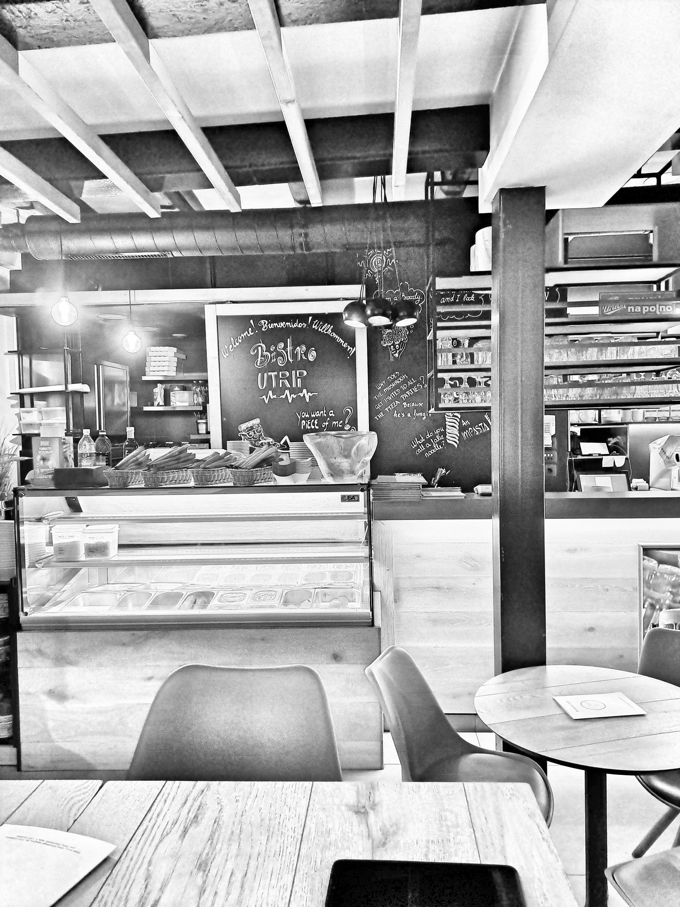

In Their Words
Issue no. 22, Enemy to disinformation. 22.09.2025
Professional Endorsements
JAKOB URH - THE HIDDEN GEM

Home Care Institute Ljubljana, 2025
“Jakob distinguished himself through his friendliness, openness, flexibility, and dedication to the well-being of the elderly.”
Jakob Urh Veler, born on May 10, 2003, worked as a home care assistant at the Home Care Institute in Ljubljana from September 6, 2023 to October 30, 2024, and again from March 17, 2025 to April 11, 2025.
During this time, Jakob proved himself to be an outstanding employee. He distinguished himself through his friendliness, openness, flexibility, and dedication to the well-being of the elderly.
He performed his work conscientiously and in full accordance with the highest ethical standards. Jakob quickly adapted to new tasks and carried them out exceptionally well.
Home care assistance is fieldwork that requires organizational skills, precision, reliability, and independence. Jakob demonstrated all of these qualities, and regardless of the diversity of tasks or locations, he never found them to be an obstacle. He adapted quickly to each situation.
With his strong sense of empathy—an essential quality in our profession—he was always able to connect with clients and provide the support they needed. He also communicated effectively, making collaboration with him consistently pleasant and constructive.
We would be delighted to work with Jakob again in the future.
“With his strong sense of empathy, he was always able to connect with clients and provide the support they needed.”
Café Utrip, 2025
“Although he started without prior experience, Jakob quickly proved himself with his dedication, initiative, and adaptability, becoming a reliable and valued member of our staff.”
It is our pleasure to recommend Mr. Jakob Urh Veler, who was part of our team at Café Utrip, employed through the Student Service.
Although he started without prior experience, Jakob quickly proved himself with his dedication, initiative, and adaptability, becoming a reliable and valued member of our staff.
Before beginning independent work, Jakob completed a 12-hour training program under the mentorship of an experienced waiter. He quickly mastered the essentials of running a café: preparing and tidying the space, handling orders and payments, assisting in the kitchen, promoting products, and maintaining cleanliness and order. At first, he mostly covered evening shifts, and later also worked during weekends and afternoons.
Jakob demonstrated an exceptional eagerness to learn and progressed rapidly into a highly capable waiter. His patience, respectful attitude towards guests and colleagues, professionalism, and work ethic
all contributed to the positive atmosphere in the café. Guests often praised his friendliness and professional demeanor, which added to our reputation and reliability.
He managed his tasks well, set priorities effectively, and remained focused even during the busiest moments. Jakob’s openness, curiosity, and respect for every member of the
team—regardless of their level of education—also stood out. In the workplace, he consistently brought positive energy and a willingness to help.
For these reasons, we wholeheartedly recommend Jakob as an exceptionally reliable, hard-working, and warm-hearted colleague.

“...we wholeheartedly recommend Jakob as an exceptionally reliable, hard-working, and warm-hearted colleague.”